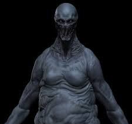
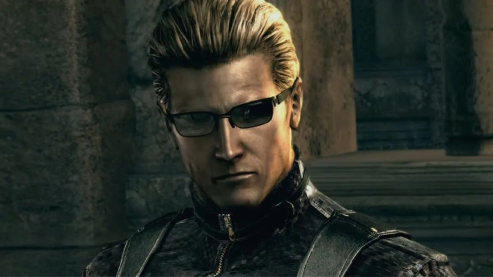
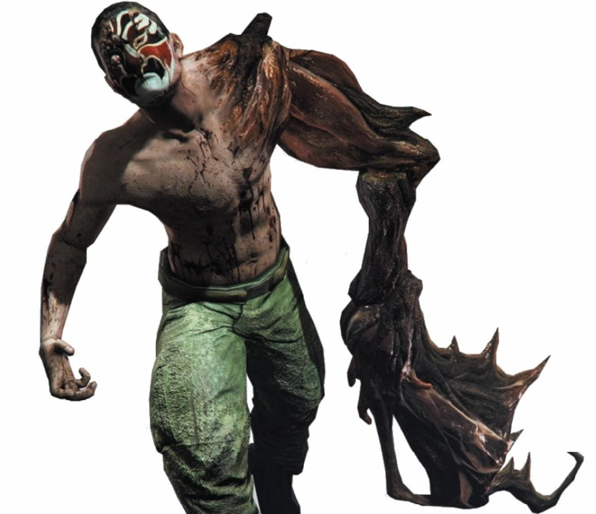

Umbrella Corporation - B.O.W Monsters RE1 to RE8
.jpg)
Tyrant T-002 (RE1)
The first successful Tyrant prototype designed by Umbrella as a bio-weapon. Stands about 2.5 meters tall with immense raw strength. Notorious for
Hunter α (MA-121) (RE1)
A reptilian B.O.W combining human and reptile DNA, resulting in enhanced agility and deadly claws. Roughly 2 meters tall, this creature is fast a
Chimera (RE1)
A grotesque fusion of human and insect DNA, able to crawl on ceilings and walls with great agility. Small but deadly, typically around 1.5 meters
Yawn (RE1)
A giant snake mutated by the T-Virus, exceeding 6 meters in length. Aggressive and territorial, often encountered in dark underground areas. It r
Neptune (RE1)
A great white shark exposed to the T-Virus, growing larger and more aggressive. Predatory and fast, it poses a lethal threat in aquatic environme
.jpg)
Tyrant T-103 (Mr. X) (RE2)
A mass-produced Tyrant sent to retrieve the G-Virus. Towering at about 3 meters, Mr. X relentlessly pursues targets with great strength and intel

Licker (RE2)
A mutation from further T-Virus exposure, featuring exposed brains and a long tongue. Agile and fast, it attacks silently in dark corridors. Appr

G (William Birkin) (RE2)
Scientist William Birkin injected himself with the G-Virus, transforming into a grotesque and powerful creature. His mutations progress through s
.jpg)
Ivy (RE2)
Plant-based B.O.W created by T-Virus experiments. Uses tentacle-like appendages for attack and defense. Agile and dangerous, often found in green
Nemesis-T Type (RE3)
A Tyrant variant with enhanced intelligence and regenerative powers. Tasked with eliminating S.T.A.R.S. members. Stands about 3 meters tall and c
Hunter β (RE3)
Successor to the α Hunter, with improved speed and ferocity. Equipped with sharp claws and enhanced senses. Stalks survivors in Raccoon City. Agi
.jpg)
Cerberus (RE3)
Zombie dogs infected by the T-Virus, fast and vicious. Commonly deployed as guard animals by Umbrella. Small but lethal, attack in groups. Highly
.jpg)
Garrador (RE4)
A blind but heavily armored creature with deadly claws. Uses echolocation to hunt. Approximately 2.5 meters tall and extremely dangerous in close
.jpg)
El Gigante (RE4)
Massive giant infected by Las Plagas parasite. Standing over 4 meters tall with immense strength. Slow but devastatingly powerful. Often used as

Verdugo (RE4)
Elite assassin infected by Las Plagas, wearing a gas mask. Fast and deadly with lethal claws. About 2 meters tall and incredibly agile. Guards ke

Regenerador (RE4)
A terrifying creature that can regenerate limbs rapidly, infected by Las Plagas. Difficult to kill without specific chemical agents. 2 meters tal
Uroboros Aheri (RE5)
A parasitic B.O.W that causes massive mutations and size increase. Known for incredible strength and regenerative abilities. Over 3 meters tall,
Majini (RE5)
Infected humans controlled by the Uroboros virus. Vary in size and power but generally aggressive and hostile. Equipped with firearms and melee w

Wesker (RE5)
Albert Wesker enhanced by viruses, possessing superhuman speed, strength, and regeneration. A major antagonist. Stands about 1.9 meters tall. Dea

J'avo (RE6)
Humans infected with the C-Virus, capable of rapid mutation and regeneration. Varying in form and strength, some exhibit advanced combat abilitie
Ustanak (RE6)
A massive bio-organic weapon deployed to hunt survivors. Over 3 meters tall, heavily armored and armed with mechanical appendages. Relentless and
Molded (RE7)
Creatures formed from bio-organic mold infection. Varied in shape but mostly humanoid, with grotesque features. Aggressive and can overwhelm surv
Jack Baker (RE7)
Patriarch of the Baker family, infected and enhanced by bio-organic mold. Possesses immense strength and regeneration. Serves as a major antagoni
Moroaica (RE8)
Mutated insect-like B.O.W found in the village. Small but vicious, known for fast attacks and swarm behavior. Represents infection spread by Moth
Lady Dimitrescu (RE8)
Tall vampire-like mutant with enhanced speed, strength, and regeneration. Over 2.9 meters tall. One of the major bosses of RE8, infamous for her